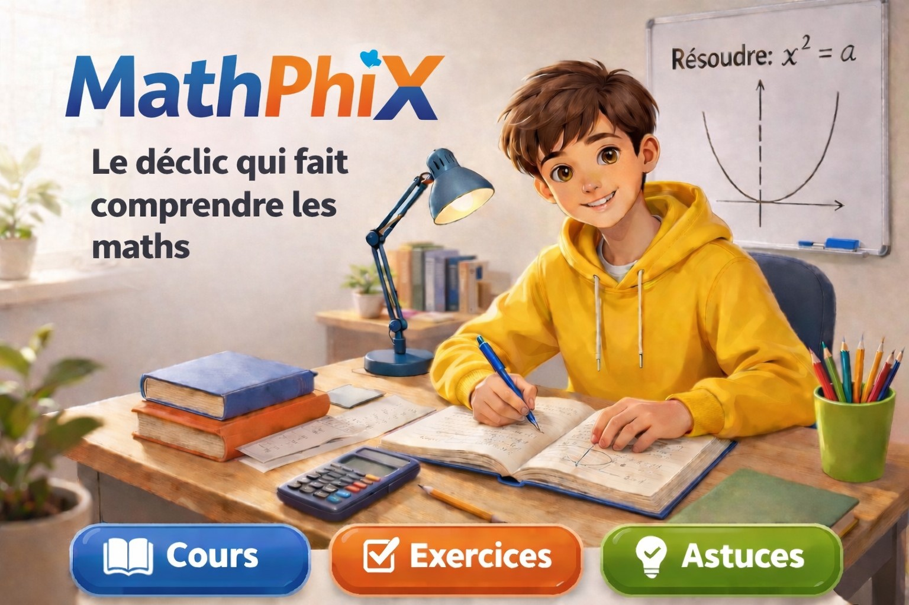

1. Nombres relatifs
Maîtriser les signes, les priorités de calcul et les opérations avec les nombres négatifs.
Maths Seconde • Reprendre confiance
Revois les bases indispensables de troisième pour entrer sereinement en seconde, puis accède aux grands chapitres du programme avec des explications simples, des exercices progressifs et des ressources utiles.

Passerelle 3e → 2de
Ce bloc est prioritaire : il contient les notions les plus utiles pour réussir en seconde.
Tu peux les travailler dans l’ordre conseillé ci-dessous.
Maîtriser les signes, les priorités de calcul et les opérations avec les nombres négatifs.
Comprendre, simplifier, additionner avec le même ou un autre dénominateur, multiplier et diviser des fractions pas à pas.
Retenir les règles de calcul et manipuler les puissances de 10 avec méthode.
Lire une expression, réduire, développer et factoriser pas à pas.
Apprendre à résoudre des équations simples de façon progressive et rassurante.
Programme complet
Une fois les bases consolidées, tu peux avancer vers les grands chapitres du programme.
Ensembles de nombres, intervalles, arithmétique, développement, factorisation, racines carrées, puissances, équations et inéquations.
Trigonométrie, repérage, vecteurs et droites pour mieux comprendre la géométrie du plan.
Fonctions de référence, courbes représentatives, résolution graphique, variations et extremums.
Information chiffrée, statistiques, probabilités et échantillonnage.
Découvrir Python à travers les mathématiques de seconde : bases du langage, fonctions, statistiques, géométrie et simulations.
Vidéos pédagogiques
Des vidéos pour reprendre les bases calmement, avec des méthodes claires et des exemples simples à suivre.
Une vidéo d’introduction pour reprendre les bases calmement.
Une méthode claire avec plusieurs exemples simples.
Exercices interactifs
Choisis un thème puis affiche une nouvelle série de 3 exercices tirés au hasard dans une banque de questions sur les notions de base.
Thème sélectionné : Nombres relatifs
Quiz automatique
Le quiz affiche 3 questions choisies au hasard dans une banque de questions sur les notions de base. Réponds puis clique sur corriger.
Message rassurant
Beaucoup d’élèves pensent être mauvais en maths alors qu’ils ont surtout besoin de revoir les bases avec une méthode claire, progressive et rassurante. Ce site est conçu pour les aider à reprendre confiance et à progresser pas à pas.
Pose une question sur une notion de maths ou sur le fonctionnement du site.